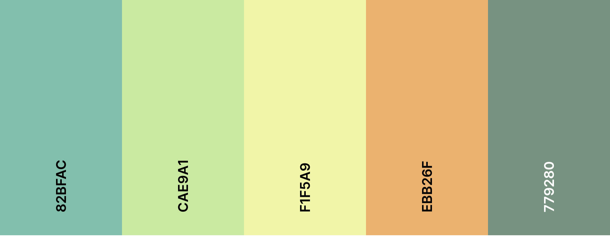
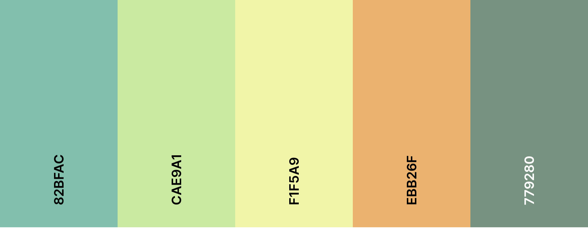

Site Plan
Color Scheme
I chose colors that I felt could represent the 4 seasons so it shows that it is there for every weather type.
Wendy Strickland | WDD230 | Weather Site
I chose colors that I felt could represent the 4 seasons so it shows that it is there for every weather type.
